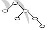
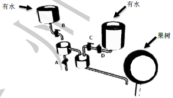
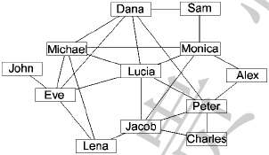

一、单选题(共20题，每题1.5分，共计30分；每题有且仅有一个正确选项)
| 1. | 以下不是微软公司出品的软件是（ ）。 |
|---|
| 2. | 如果256 种颜色用二进制编码来表示，至少需要（ ）位。 |
|---|
| 3. | 以下不属于无线通信技术的是（ ）。 |
|---|
| 4. | 以下不是CPU生产厂商的是（ ）。 |
|---|
| 5. | 以下不是存储设备的是（ ）。 |
|---|
| 6. | 如果开始时计算机处于小写输入状态，现在有一只小老鼠反复按照CapsLock、 字母键A、字母键S和字母键D的顺序循环按键，即CapsLock、A、S、D、 CapsLock、A、S、D、……，屏幕上输出的第81 个字符是字母（ ）。 |
|---|
| 7. | 二进制数00101100 和00010101 的和是（ ）。 |
|---|
| 8. | 与二进制小数0.1 相等的八进制数是（ ）。 |
|---|
| 9. | 以下是32 位机器和64 位机器的区别的是（ ）。 |
|---|
| 10. | 以下关于字符串的判定语句中正确的是（ ）。 |
|---|
| 11. | 一棵二叉树如右图所示，若采用顺序存储结构，即用一维数组元素存储该二叉树中的结点（根结点的下标为1， 若某结点的下标为i，则其左孩子位于下标2i处、右孩子位于下标(2i+1)处）， 则图中所有结点的最大下标为（ ）。 |  |
|---|
| 12. | 若有如下程序段，其中s、a、b、c均已定义为整型变量，且a、c均已赋值（c大于0）。
s = a; for (b = 1; b <= c; b++) s = s + 1;则与上述程序段修改s值的功能等价的赋值语句是（ ）。 |
|---|
| 13. | 有以下程序：
#include <iostream>
using namespace std;
int main() {
int k = 4, n = 0;
while (n < k) {
n++;
if (n % 3 != 0)
continue;
k--;
}
cout << k << "," << n << endl;
return 0;
}
程序运行后的输出结果是（ ）。
|
|---|
| 14. | 给定含有n个不同的数的数组L=< x1, x2, ...,
xn >。
如果L中存在xi(1< i < n)
使得x1 < x2 < ...
< xi-1 < xi > xi+1 > ...
> xn，
则称L是单峰的，并称xi是L的“峰顶”。现在已知L是单峰的，
请把a-c 三行代码补全到算法中使得算法正确找到L的峰顶。
a. Search(k+1, n) b. Search(1, k-1) c. return L[k] Search(1, n) 1. k←⌊n/2⌋ 2. if L[k] > L[k-1] and L[k] > L[k+1] 3. then __________ 4. else if L[k] > L[k-1] and L[k] < L[k+1] 5. then __________ 6. else __________正确的填空顺序是（ ）。 |
|---|
| 15. | 设简单无向图G有16 条边且每个顶点的度数都是2，则图G有（ ）个顶点。 |
|---|
| 16. | 有7 个一模一样的苹果，放到3 个一样的盘子中，一共有（ ）种放法。 |
|---|
| 17. | 下图表示一个果园灌溉系统，有A、B、C、D四个阀门，每个阀门可以打开或关上， 所有管道粗细相同，以下设置阀门的方法中，可以让果树浇上水的是（ ）。 |  |
|---|
| 18. | Lucia和她的朋友以及朋友的朋友都在某社交网站上注册了账号。下图是他们之间的关系图， 两个人之间有边相连代表这两个人是朋友，没有边相连代表不是朋友。这个社交网站的规则是： 如果某人A向他（她）的朋友B分享了某张照片，那么B就可以对该照片进行评论；如果B评论了该照片， 那么他（她）的所有朋友都可以看见这个评论以及被评论的照片，但是不能对该照片进行评论 （除非A也向他（她）分享了该照片）。现在Lucia已经上传了一张照片， 但是她不想让Jacob看见这张照片，那么她可以向以下朋友（ ）分享该照片。 |  |
|---|
| 19. | 周末小明和爸爸妈妈三个人一起想动手做三道菜。小明负责洗菜、爸爸负责切菜、妈妈负责炒菜。
假设做每道菜的顺序都是：先洗菜10 分钟，然后切菜10 分钟，最后炒菜10 分钟。那么做一道菜需要30 分钟。 注意：两道不同的菜的相同步骤不可以同时进行。例如第一道菜和第二道的菜不能同时洗，也不能同时切。 那么做完三道菜的最短时间需要（ ）分钟。 |
|---|
| 20. | 参加NOI比赛，以下不能带入考场的是（ ）。 |
|---|
二、问题求解(共2题，每题5分，共计10分)
| 1. | 从一个4×4 的棋盘（不可旋转）中选取不在同一行也不在同一列上的两个方格，共有 种方法。 |
|---|
| 2. | 约定二叉树的根节点高度为1。一棵结点数为2016 的二叉树最少有 个叶子结点；一棵结点数为2016 的二叉树最小的高度值是 。 |
|---|
三、阅读程序写结果(共4题，每题8分，共计32分)
| 1. |
#include <iostream>
using namespace std;
int main() {
int max, min, sum, count = 0;
int tmp;
cin >> tmp;
if (tmp == 0)
return 0;
max = min = sum = tmp;
count++;
while (tmp != 0) {
cin >> tmp;
if (tmp != 0) {
sum += tmp;
count++;
if (tmp > max)
max = tmp;
if (tmp < min)
min = tmp;
}
}
cout << max << "," << min << "," << sum / count << endl;
return 0;
} |
|---|---|
| 输入：1 2 3 4 5 6 0 7 | |
| 输出： |
| 2. |
#include <iostream>
using namespace std;
int main() {
int i = 100, x = 0, y = 0;
while (i > 0) {
i--;
x = i % 8;
if (x == 1)
y++;
}
cout << y << endl;
return 0;
}
|
|---|---|
| 输出： |
| 3. |
#include <iostream>
using namespace std;
int main() {
int a[6] = {1, 2, 3, 4, 5, 6};
int pi = 0;
int pj = 5;
int t , i;
while (pi < pj) {
t = a[pi];
a[pi] = a[pj];
a[pj] = t;
pi++;
pj--;
}
for (i = 0; i < 6; i++)
cout << a[i] << ",";
cout << endl;
return 0;
}
|
|---|---|
| 输出： |
| 4. |
#include <iostream>
using namespace std;
int main() {
int i, length1, length2;
string s1, s2;
s1 = "I have a dream.";
s2 = "I Have A Dream.";
length1 = s1.size();
length2 = s2.size();
for (i = 0; i < length1; i++)
if (s1[i] >= 'a' && s1[i] <= 'z')
s1[i] -= 'a' - 'A';
for (i = 0; i < length2; i++)
if (s2[i] >= 'a' && s2[i] <= 'z')
s2[i] -= 'a' - 'A';
if (s1 == s2)
cout << "=" << endl;
else if (s1 > s2)
cout << ">" << endl;
else
cout << "<" << endl;
return 0;
}
|
|---|---|
| 输出： |
四、完善程序(共2题，每题14分，共计28分)
| 1. | （读入整数）
请完善下面的程序，使得程序能够读入两个int 范围内的整数，
并将这两个整数分别输出，每行一个。 输入的整数之间和前后只会出现空格或者回车。输入数据保证合法。 例如： 输入： 123 -789 输出： 123 -789 |
|---|
#include <iostream>
using namespace std;
int readint() {
int num = 0; // 存储读取到的整数
int negative = 0; // 负数标识
char c; // 存储当前读取到的字符
c = cin.get();
while ((c < '0' || c > '9') && c != '-')
c = ;
if (c == '-')
negative = 1;
else
;
c = cin.get();
while ( ) {
;
c = cin.get();
}
if (negative == 1)
;
return num;
}
int main() {
int a, b;
a = readint();
b = readint();
cout << a << endl << b << endl;
return 0;
}
|
| 2. | （郊游活动）
有n名同学参加学校组织的郊游活动，已知学校给这n名同学
的郊游总经费为A元，与此同时第i位同学自己携带了Mi元。为了方便郊
游，活动地点提供B(≥n)辆自行车供人租用，租用第j辆自行车的价格为Cj
元，每位同学可以使用自己携带的钱或者学校的郊游经费，为了方便账务管
理，每位同学只能为自己租用自行车，且不会借钱给他人，他们想知道最多
有多少位同学能够租用到自行车。 本题采用二分法。对于区间[l,r]，我们取中间点mid并判断租用到自行 车的人数能否达到mid。判断的过程是利用贪心算法实现的。 |
|---|
#include <iostream>
using namespace std;
#define MAXN 1000000
int n, B, A, M[MAXN], C[MAXN], l, r, ans, mid;
bool check(int nn) {
int count = 0, i, j;
i = ;
j = 1;
while (i <= n) {
if ()
count += C[j] - M[i];
i++;
j++;
}
return ;
}
void sort(int a[], int l, int r) {
int i = l, j = r, x = a[(l + r) / 2], y;
while (i <= j) {
while (a[i] < x) i++;
while (a[j] > x) j--;
if (i <= j) {
y = a[i]; a[i] = a[j]; a[j] = y;
i++; j--;
}
}
if (i < r) sort(a, i, r);
if (l < j) sort(a, l, j);
}
int main() {
int i;
cin >> n >> B >> A;
for (i = 1; i <= n; i++)
cin >> M[i];
for (i = 1; i <= B; i++)
cin >> C[i];
sort(M, 1, n);
sort(C, 1, B);
l = 0;
r = n;
while (l <= r) {
mid = (l + r) / 2;
if () {
ans = mid;
l = mid + 1;
} else
r = ;
}
cout << ans << endl;
return 0;
}
|